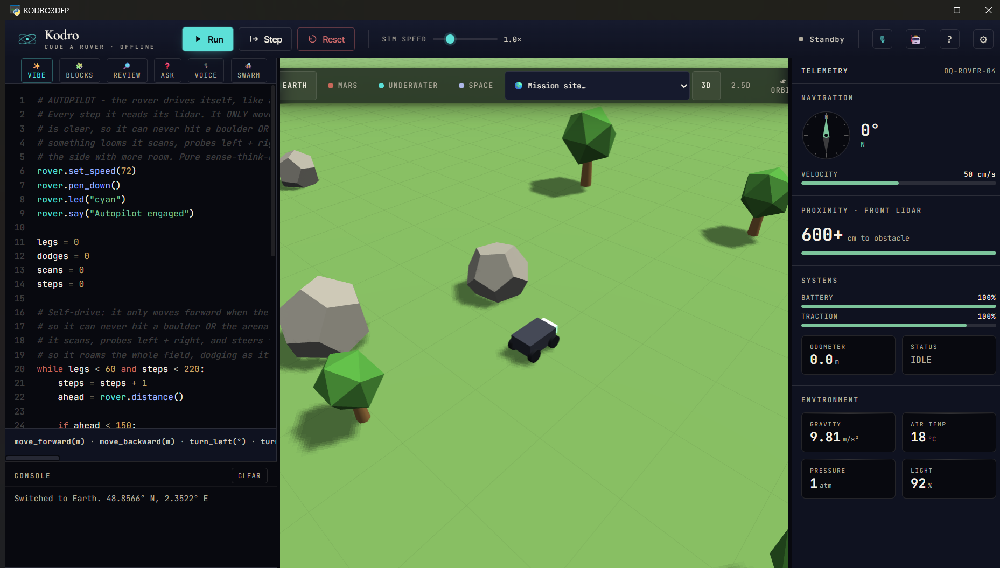
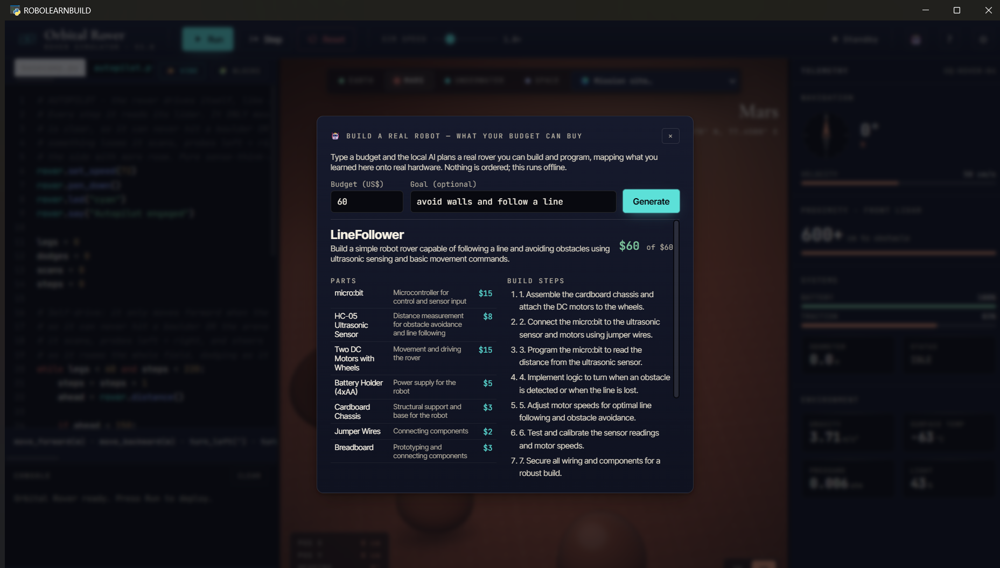

Department of Computer Science · COMP702 MSc Project
Kodro: An Offline, Self-Improving Tutor for Learning to Program a Simulated Rover
Specification and Design Proposal (CA1)
Name Vaibhav Lalwani
Student ID 201979723
Supervisor Keith Dures
Submission date 19 June 2026
Statement of ethical compliance. The declared categories for this project are data category A0 and participant category 2, and I confirm that I will follow the School's ethical guidance throughout. The evaluation carried out so far uses simulated personas and involves no human participants and no personal data. Any later evaluation that involves real pupils or teachers will be planned with my supervisor, kept within the permitted activities, and conducted only with appropriate consent and safeguarding. I will update this statement in future assessments if my plans change.
COMP702 CA1 Specification and Design Proposal · Vaibhav Lalwani (201979723) · University of Liverpool
1. Project description
Children learn to program far more readily when they can see their instructions do something in the world. Physical robot kits make that connection vivid, but they are expensive, fragile, and rarely reach every desk in a classroom. Kodro replaces the kit with a single offline download. A pupil writes ordinary Python, presses Run, and watches a simulated rover drive across Mars, the Moon, an underwater plain or a real map of Earth while the program is executed in a sandbox and marked against the goals of the lesson.
What makes the project a piece of research rather than a teaching toy is the layer that sits on top of the simulator: a small set of artificial intelligence features that try to help a learner the way a patient teacher would, and that do so without ever reaching the internet. The whole system runs on a school laptop with no cloud service, no accounts and no per seat cost, so a pupil's work never leaves the machine. The project asks whether a useful, honest tutor can be built under that hard offline constraint, and how good it can be made.
2. Aims and requirements
Aims
Build an offline desktop application in which children learn to program by commanding a simulated rover through curriculum mapped lessons.
Design an artificial intelligence layer, running on a local model only, that grounds its answers in the lesson material, improves its hints from a pupil's own outcomes, and demonstrates simple multi-agent behaviour.
Evaluate the tutor honestly, both with automated tests and with a structured study, and report what works and what does not.
Requirements
Essential:
Execute real Python safely in a sandbox and grade it against per lesson success criteria.
Provide a set of lessons mapped to the UK Computing curriculum, from early stages to GCSE level.
Run all artificial intelligence features on a local model with graceful behaviour when none is installed.
Keep every byte of pupil data on the device.
Desirable:
A real three dimensional view of the world with first and third person cameras.
A grounded question and answer feature, a voice route into the rover, and a multi-rover swarm.
Teacher facing tools and accessibility options such as a high contrast theme and read aloud.
3. Key literature and background reading
The educational case for the project rests on a long line of work on tutoring. Bloom (1984) set the benchmark with the observation that one to one tutoring lifts the average learner by around two standard deviations, and VanLehn (2011) later showed that step based computer tutors can approach human tutoring when they give feedback at the right grain. Weintrop and Wilensky (2017) found that block based environments help novices, which motivates the project's blocks mode that compiles to real Python. Together these justify a design built around immediate, specific feedback rather than answer giving.
The technical reading concerns the limits of today's language models and the honest ways to work within them. Huang et al. (2023) survey hallucination and show it is intrinsic rather than a bug to be patched, which is dangerous for a child who cannot tell a real function from an invented one. The standard mitigation is to ground generation in retrieved sources rather than the model's memory (Lewis et al., 2020), and Jacobs and Jaschke (2024) show that a constrained model can give useful programming feedback without giving the solution away. On improvement over time, Tao et al. (2024) make clear that genuine weight level self evolution is unsolved, so the project pursues improvement at the level of the system, in the spirit of the verbal reflection loop of Shinn et al. (2023). Finally, the swarm draws on multi-agent collaboration (Du et al., 2023; Wu et al., 2023), while Cemri et al. (2025) provide a sober reminder that naive multi-agent setups fail in characteristic ways, which is why a deterministic check, not another model, has the final word.
4. Development and implementation summary
The application is written in Python 3.12 and presented through a desktop web view, with the interface built in React and pre-compiled so it starts quickly and needs no build tools at runtime. The three dimensional world is drawn with a vendored copy of the Three.js graphics library, so it works without any download. Pupil work is stored in a single local SQLite file, and the artificial intelligence features call a local model served by Ollama. These choices follow directly from the constraint: everything must be free, offline, and light enough for an ageing classroom machine, and a desktop application meets that far better than a hosted web service.
The work is organised as a sequence of small, independently testable changes. Each change is covered by automated tests and is only merged once a continuous integration pipeline runs the full test suite, a type checker and a linter on three operating systems. This keeps the codebase releasable at every step and gives an honest record of progress.
5. Data sources
The project uses no external or open datasets. The lessons are authored by hand as structured files within the project, and the only data generated at runtime is a pupil's own code and progress, which is written to a local database and never leaves the machine. The local language model is run from weights already present on the device through Ollama, with no call to any remote service. The evaluation activity does generate data, in the form of ratings and written feedback, and that is covered in the ethics section below. Beyond this, there is no use of personal or third party data in the project.
6. Testing and evaluation
Testing is automated and continuous. The project currently carries more than eight hundred unit and integration tests at around eighty five percent coverage, with a type checker and linter enforced on every change, so a regression is caught as a failing build rather than by a pupil. Evaluation, which asks the harder question of whether the tutor actually helps, is approached in two ways. A simulated study uses a panel of distinct personas, generated to span the pupils, teachers and support staff who might use the tool, each of whom inspects the build and rates it. This is a low cost, broad coverage inspection method, not a substitute for watching real children, and it is reported as such. It has already been run repeatedly as the work has landed, and the table below records the trajectory.
Round
Personas
Focus of the round
Mean rating (out of 10)
1
50
First contact with the build
5.86
2
12
After the first round of fixes
6.50
3
50
After wiring the learner model and teacher tools into the app
7.10
4
50
After grounded answers and the voice route were added
7.36
5
8
Focused review of the new three dimensional world
6.40
The pattern is the point. The first round was deliberately unflattering, and each later round fixed the concrete defects the personas named and then re-rated the same build, lifting the mean from about 5.9 to about 7.4 across the rounds on the core product. The fifth round was a fresh, focused inspection of the newly added three dimensional view, which is why it sits lower; the issues it raised, around readable direction, reduced motion and performance on weak graphics hardware, have since been addressed in the same loop. Future evaluation will add observation of real pupils and teachers in a classroom, under the ethics arrangements described next, since the simulated study can only stand in for that.
7. Project ethics and human participants
No human participants have been involved to date. The personas used in the evaluation are generated by software and are clearly reported as a simulation, not as real users, so no consent, recruitment or personal data is involved at this stage. The planned classroom evaluation does involve people, and it falls under participant category 2. For it, participants will be given a plain explanation and asked only to use the software and offer feedback; their data will be anonymised at the point of collection, aggregated for reporting, and never linked to an individual. Because the likely participants include children, the activity will be arranged through a teacher, conducted only with the appropriate consent and safeguarding in place, and agreed with my supervisor before it begins. There are no other special ethical considerations for the project.
8. BCS project criteria
The project is intended to meet the six BCS honours project outcomes as follows.
BCS outcome
How the project meets it
Systematic understanding and critical awareness at the forefront of the discipline
The design engages directly with current problems in applied language models: hallucination, grounding, and honest self improvement.
Comprehensive understanding of applicable techniques
Retrieval grounding, a deterministic sandbox verifier, and a system level learning loop are selected and justified against the literature.
Originality in the application of knowledge
The novelty is delivering grounded, self improving and multi-agent behaviour entirely offline on a school machine, which the cloud tools do not attempt.
Handle complex issues and communicate to specialist and non specialist audiences
The work balances competing constraints and is documented for both a teacher and an examiner, as in this proposal.
Self direction and originality in solving problems autonomously
The project is planned, built and tested independently, with a continuous integration gate evidencing the process.
Critical self evaluation of the process
The evaluation is reported honestly, including weak first results and the fixes that followed, rather than only the best numbers.
9. UI/UX mockup
The interface is a single window with the code editor and console on the left, the world in the centre, and live telemetry on the right. The three figures below show the working interface, which stands in for a wireframe: the rover driving in the real three dimensional world, the pupil's Python beside the simulated mission, and the budget robot builder that connects the code to a real piece of hardware, answering a pupil's question of why the coding matters.

The rover running in the real 3D world.Writing Python beside the live mission.

From code to a real robot: why it matters.
10. Project plan
The plan runs from the proposal to the final dissertation, with the two later assessments and the write up built in. Fortnightly supervisor meetings run throughout.
Stage
Jun
Jul
Aug
Sep
Specification and design (CA1)
Core build and AI layer
3D world, voice and swarm
Demonstration (CA2)
Classroom evaluation
Dissertation write up (CA3)
11. Risks and contingency plans
Risk
Contingency
Likelihood
Impact
Hardware failure or lost work
All code is committed to a remote repository on every change; the database is a single file that copies easily.
Low
High
Local model too weak for some answers
Grounding keeps answers tied to lesson sources, and the model refuses rather than guesses; a more capable local model can be configured.
Medium
Medium
Classroom evaluation cannot be arranged in time
The simulated persona study gives broad coverage as a fallback, and the dissertation reports it honestly as such.
Medium
Medium
Running out of time
The build is kept releasable at every step, so an earlier version is always a valid deliverable.
Medium
High
Software defects reaching pupils
A continuous integration gate runs the full test suite, type checker and linter before any change is merged.
Low
Medium
12. References
Bloom, B.S. (1984) The 2 sigma problem: the search for methods of group instruction as effective as one to one tutoring. Educational Researcher, 13(6), pp. 4 to 16.
Cemri, M., Pan, M.Z., Yang, S. et al. (2025) Why do multi-agent LLM systems fail? arXiv:2503.13657.
Du, Y., Li, S., Torralba, A., Tenenbaum, J.B. and Mordatch, I. (2023) Improving factuality and reasoning in language models through multiagent debate. arXiv:2305.14325.
Huang, L., Yu, W., Ma, W. et al. (2023) A survey on hallucination in large language models. ACM Transactions on Information Systems (arXiv:2311.05232).
Jacobs, S. and Jaschke, S. (2024) Evaluating the application of large language models to generate feedback in programming education. arXiv:2403.09744.
Lewis, P., Perez, E., Piktus, A. et al. (2020) Retrieval augmented generation for knowledge intensive NLP tasks. Advances in Neural Information Processing Systems, 33.
Shinn, N., Cassano, F., Berman, E. et al. (2023) Reflexion: language agents with verbal reinforcement learning. arXiv:2303.11366.
Tao, Z., Lin, T.E., Chen, X. et al. (2024) A survey on self evolution of large language models. arXiv:2404.14387.
VanLehn, K. (2011) The relative effectiveness of human tutoring, intelligent tutoring systems, and other tutoring systems. Educational Psychologist, 46(4), pp. 197 to 221.
Weintrop, D. and Wilensky, U. (2017) Comparing block based and text based programming in high school computer science classrooms. ACM Transactions on Computing Education, 18(1), Article 3.
Wu, Q., Bansal, G., Zhang, J. et al. (2023) AutoGen: enabling next-gen LLM applications via multi-agent conversation. arXiv:2308.08155.
Generative artificial intelligence assisted the development of the software and the drafting of this document, which is acknowledged in line with University guidance. All technical claims describe the working system, the evaluation figures are reported as measured, and the references were checked at the time of writing.